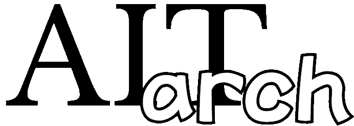

AIで日常と投資を豊かにし、次世代の「情報」教育をリードする
AIを活用
日々楽しく、生産性を上げよう
AIで投資に勝利
データに基づいた投資戦略
共通テスト「情報Ⅰ」攻略
新時代の必須スキルをマスター
OIH_AIエージェント研究会
高校＜数学・物理・英語＞学習アプリ
自己紹介
長年、高等学校：数学・情報の教員として、教科指導やSSH（スーパーサイエンスハイスクール）での課題研究指導に情熱を注いできました。
ネットワーク構築や情報モラル教材の開発などの実績が評価され、以下の賞をいただきました。
- 2011年度：大阪府 優秀教員表彰
- 2012年度：文部科学省 優秀教員表彰
とくに、2019年度より、中高生への機械学習・ディープラーニング指導を開始。2020年3月には、指導した生徒3名と共に、日本ディープラーニング協会の「G検定」に合格しました。
サポートした高校生の課題研究テーマには、以下のようなものがあります。
- 機械学習によるウイルスゲノムの分類システムの構築（2019年SSH生徒研究発表会 全国大会出場）
- 曲線を用いた手書き文字認識システムの構築
- 畳み込みニューラルネットワークを用いた衛星写真の月ごとの分類
- AIを用いた為替相場予測
- ボール自動回収ロボットの実現に向けて
現在、保険代理店様を対象に、IT機器の導入・運用支援、Webサイトの管理、そしてAI導入に向けたコンサルティング業務を行っております。
研修会のご依頼、業務効率化、独自AIシステムやアプリの開発など、お気軽にご相談ください。
Contact
info@aitarch.com